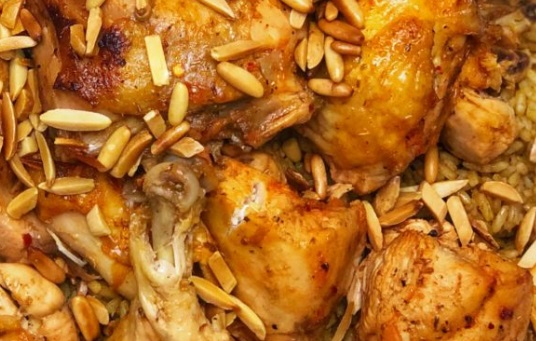
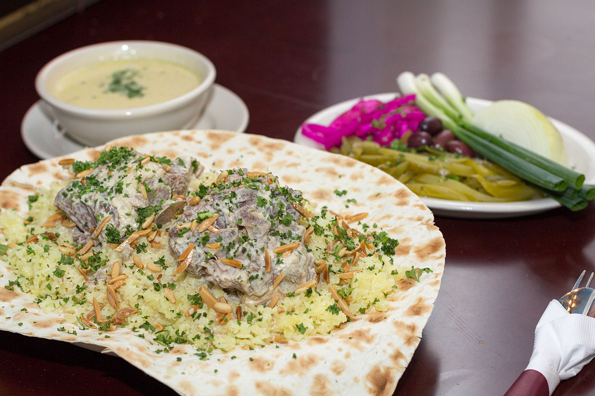

We present all arabic foods
- Mansaf
- kabseh
- maqlobeh
- mandie
People can sometimes be hesitant and anxious about trying new food, especially if it contains ingredients you have never heard of. Middle Eastern cuisine, owing to the vastness of the land and the people it originates from, is rich beyond comprehension, both in taste and ingredients.
Also, it’s vegan heaven! Arab countries offer tasty traditional food to tourists around the world. Whether its Abu Dhabi, Saudi Arabia, Dubai or Ajman, you will get the chance to enjoy the best, tasty and traditional Arab food everywhere. But if you still want to make middle eastern wonders at home, the following seven are the most traditional recipes of Arab cuisine which you must try at least once in your life!
here are some pictures
 